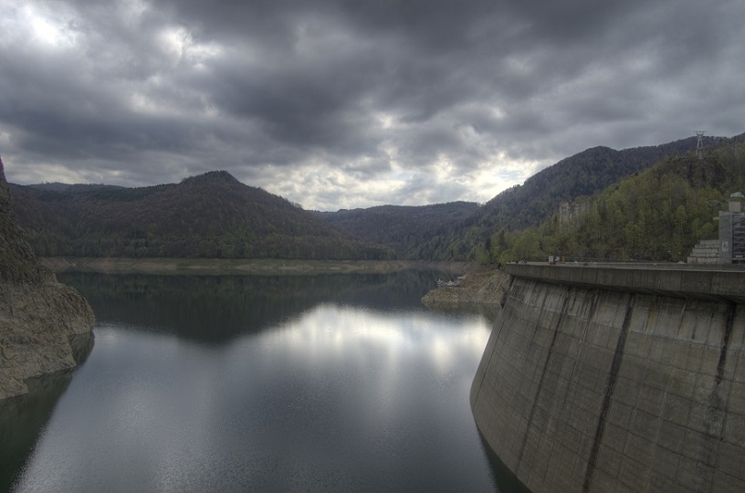
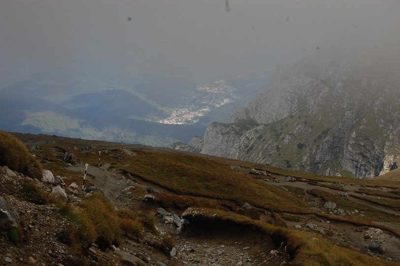
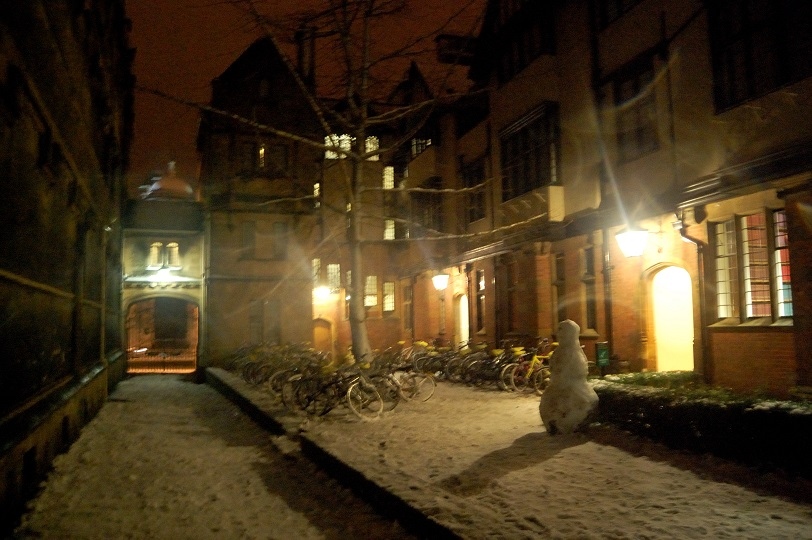
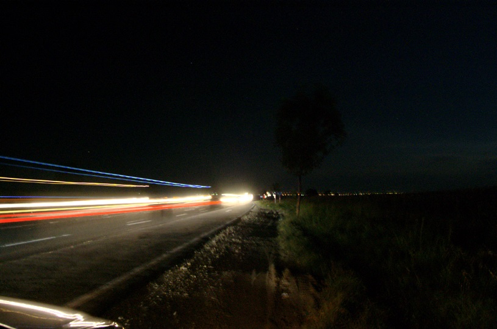
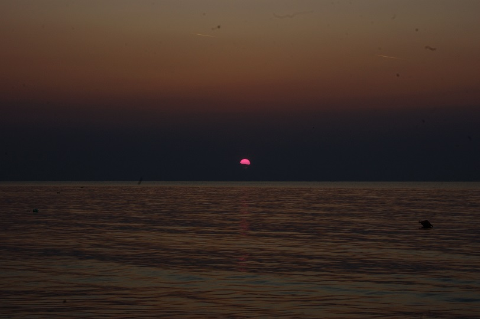

Toggle navigation
Ion Ambrinoc
Home
CV
Contact
Photos
facebook
linkedin
blog
github
google+
twitter
Photo gallery
A small collection of photos taken by me since 2008.
a small experiment in photos of lightning over Bucharest, Romania, 2009

playing with HDR, Vidraru dam, Romania, 2010
Romanian band Iris playing at Folk You 2009
your host, lost between mountains

Prahova valley, as seen from above
a waterfall, frozen by long exposure
two Romanians in Glasgow
Big Ben, early in the morning
Early morning Oxford skyline
2013 Supermoon between clouds
sunset over the Muddy Volcanoes

Winter in Oxford

long exposure next to a road

sunrise at the Black Sea, 2009
snowed-under flowers, winter 2010
flowering trees, spring 2010
snowdrop, winter 2010
ultra-macro experiment: bark
ultra-macro experiment: petals
© ion ambrinoc, october 2014; using
twitter bootstrap
; hosted by
Oxford University IT Services
. Optimized for view on a laptop screen. - version 1.0 of 24.10.2014